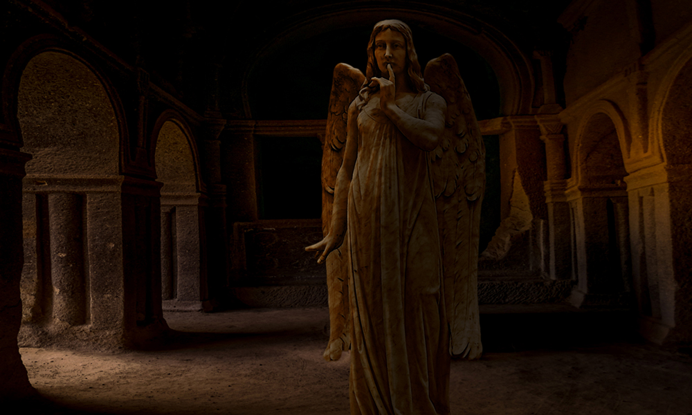
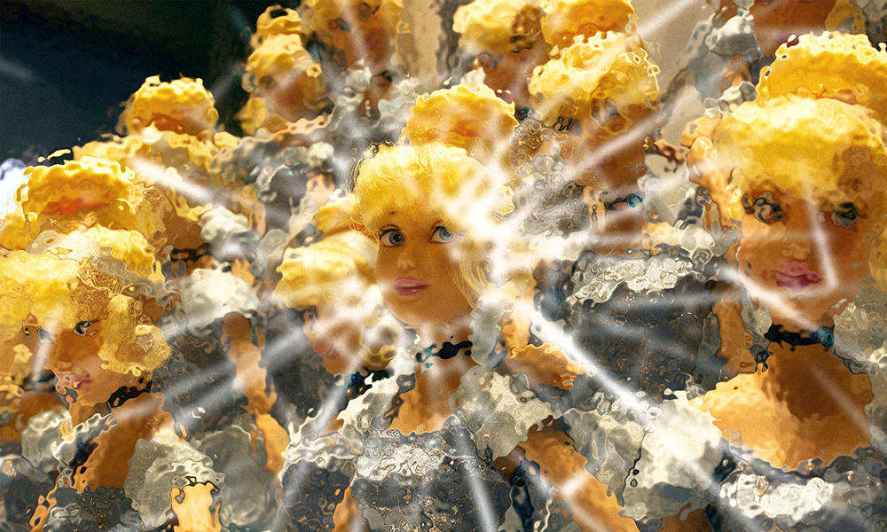
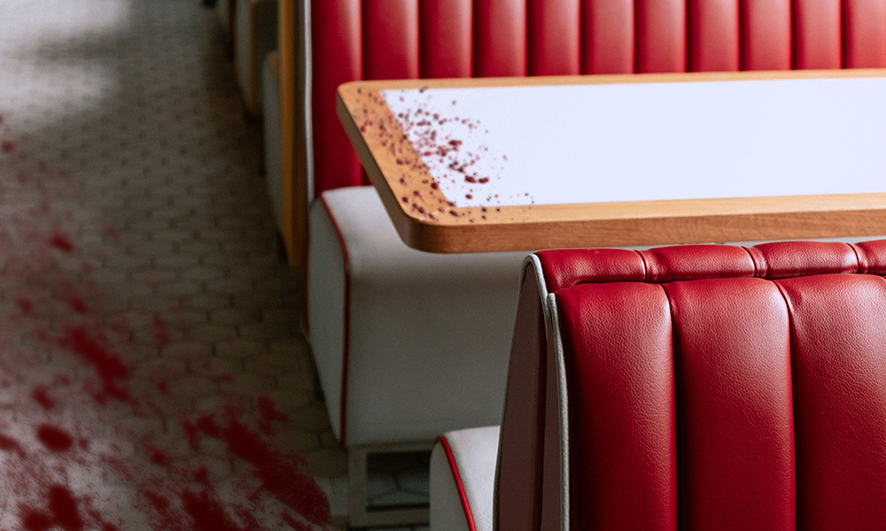

Sex and drugs and rock'n'roll: some permutation of music's answer to The Good, the Bad, and the Ugly, perhaps – only, when you're at the top, everything's 'The Good', right? It's all going to last forever, and nothing can go wrong. Joelle Killian takes us to the top and gives us a glimpse of the bottom – or possibly the other way around. Unless the top was always an illusion. And maybe it would be better if it was.

Kirk Bueckert delivers something in the classic vein here: echoes of Hammer Horror, Don't Look Now, and other gems of a bygone era of the dark and supernatural. Sit back, as some unsuspecting person finds themselves prised from their normality by inconvenient circumstance that gradually shifts to the disquieting before unexpectedly coming over all unspeakable…

Schools make for strange places in fantastical fiction, but even real schools are strange places: sometimes small, sometimes sprawling, they too often form the individuals of the future by filing away what makes each pupil distinct. Appropriate, then, that if Elin Olausson's story of a strange cohort has a narrator, it is one who identifies as the whole.
Environment matters in sf, but entertainment matters too, and short fiction leaves little space for balancing acts. Donald McCarthy doesn't just give good world-building, the kind that carries the scent of what came before and leaves an aftertaste for whatever will follow – he uses it to flavour the story at hand without overwhelming what we're here for now: thrills and spills.

There is much to be said for traveling. Expanded horizons expand the mind, and that can only be an advantage in creative endeavours. In relocating from South Africa to Finland, Xan van Rooyen has clearly found some inspiration: this piece of dark fantasy has its origin in the Finnish folklore that gave the calendar months their names…

Don Mark Baldridge prefaced his submission by quoting journalist Nell Greenfieldboyce: 'And it turns out, once that was done, there was still plenty of unexplained light.' Strange. Look it up sometime. In response, and from the same article, we'll quote astronomer Tod Lauer right back at him, because (of this story, just as of space), 'It's still pretty dark.'

Welcome back to Mattia 'The Book Chemist' Ravasi, who returns after a six-month hiatus with his second longform fiction review. This time he shifts focus from the abstract and oppressive science fictional to the not-exactly hallucinogenic fantastical.
After this issue's editorial you'd think your editor had read quite enough. But no: once more unto the breach, dear friends, to sample the recent output of our peers. Here are three brief recommendations for further reading, available online now. And if we're still unwilling to rein it in at only three? Well tough, the more the merrier!